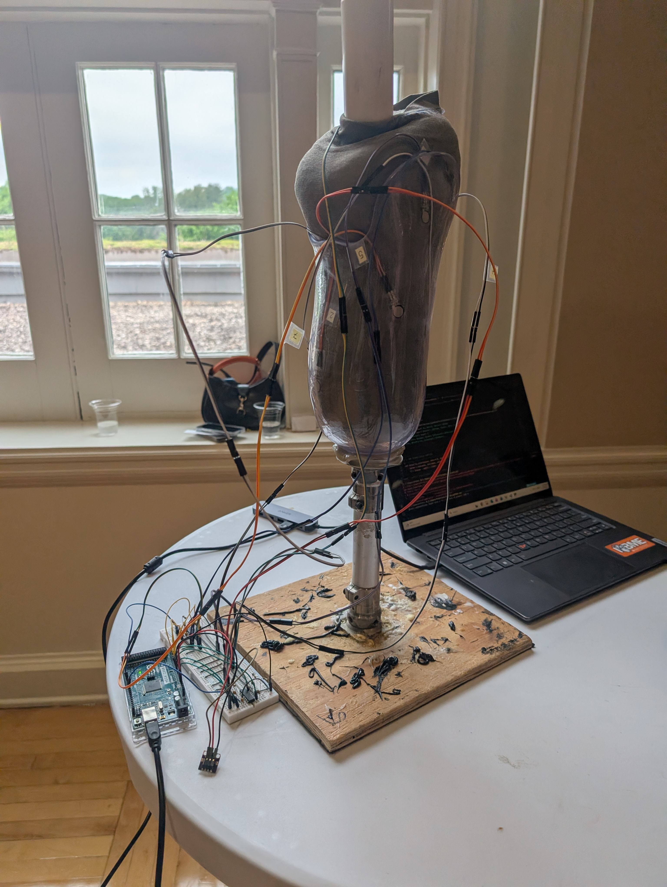
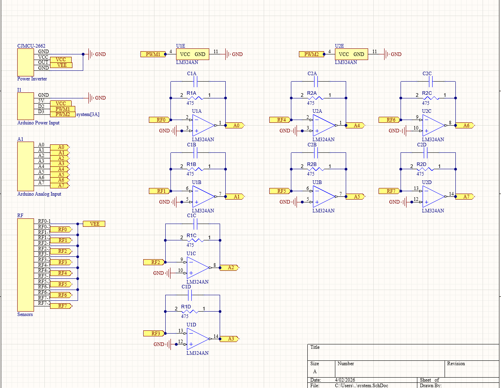

Development of a pressure sensing application to optimize prosthetic socket fitting for below-the-knee amputees. I was the electrical lead working with a team of Biomedical engineers.

In the U.S., over 2 million people live with lower limb loss. Prosthetic fit is assessed primarily though subjective patient feedback. This trial-and-error process limits precision and can be impossible for patients with nerve damage or limited feeling. Our project provides an objective way to fit prosthetics by adding a sensor system fitting device. This data from the sensors is then displayed on a computer, providing objective feedback to clinicians.

The sensor system consists of 8 flexi a301 sensors. Op-amp circuits convert the change in sensor resistance into voltages that are readable by the microcontrollers ADC. This data is then sent to a laptop and displayed on a UI. The schematic shows the connections and component values used in the prototype.